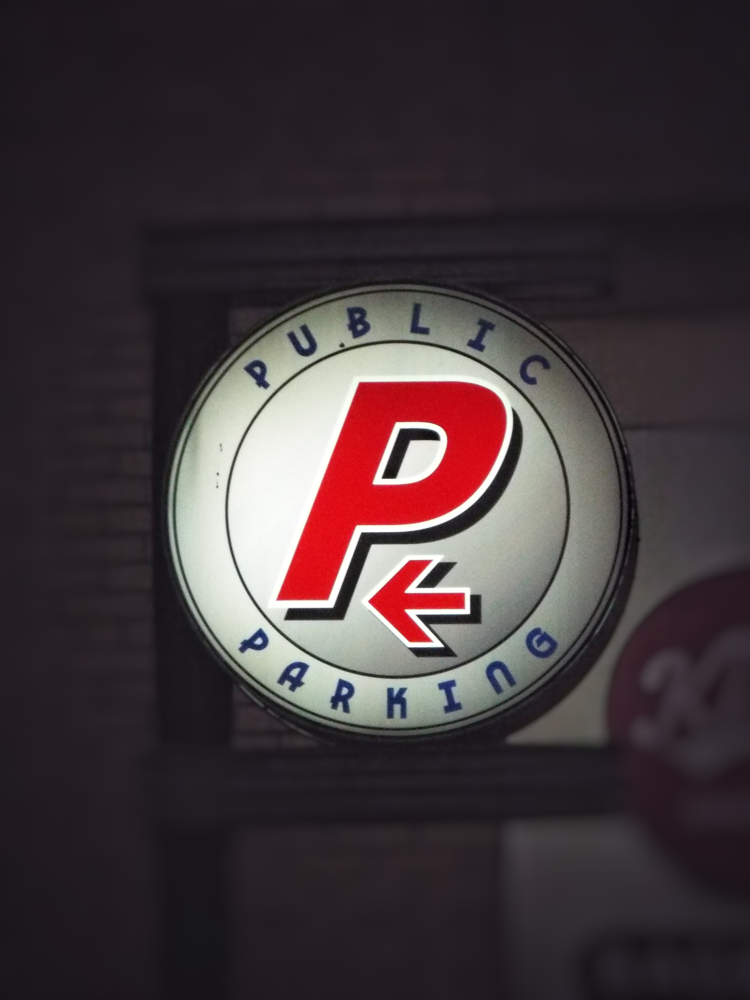

Arrow Keeps Pointing Left
21:06 — I pulled into the lot to prove it was ordinary, pay, park, leave, that is all, and the round PUBLIC PARKING sign was lit so hard it looked like an eye, white face, red P, black ring, arrow left, always left. I stood there long reading it like a warning label. I know a sign is a sign, I get that, but it was pointed at the side street where my neighbor was walking and pretending to check his phone even though the screen was black.
I saw the man in the store two blocks before this, same jacket as yesterday, same shoulder dip when he turns away, and now he is in a parking structure at night when he does not drive, he never drives, he walks and disappears behind columns. People will say coincidence, repeat traffic, normal foot patterns, but normal does not line up this clean three times in one evening, not with the utility guy parked across from the exit acting like he is waiting for a hand signal.
I circled level two because I did not want to give them move, and yes that sounds dramatic, no, it is practical, because if I leave when expected I become very easy to place on a map.
